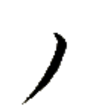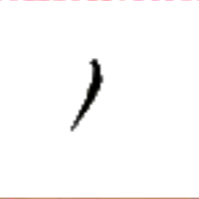
ホエゥー→
【少】
[連体詞]
少しの
[副詞]
少々、少し
少時
ホエゥー→カㇰ·
【少時】
[時間詞]
少しの間
星少
ペゥㇳ⤴ホエゥー→
【星少】
[状態動詞]
若い
少星
ホエゥー→ペゥㇳ⤴
【少星】
[動詞＋目的語]
（比較の構文で使って）～よりも～歳若い
汝少二星於我
ムアー⤴ホエゥー→イㇰ⤴ペゥㇳ⤴イェ·パイ⤴
【汝少二星於我】
君は私より2歳若い。
言少
チェㇷ゚→ホエゥー→
【言少】
[動詞]
一言二言ほど言う
口少
ヤㇺ→ホエゥー→
【口少】
[動詞]
一口二口ほど食べる
須少
リュ·ホエゥー→
【須少】
[状態動詞]
暇である
須少時
リュ·ホエゥー→カㇰ·
【須少時】
[時間詞]
暇な時、余暇、自由時間
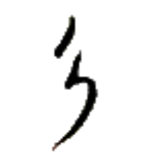
ディㇳ→
【貝】
[名詞]
貝
[略号]
（伝統文法論における）連体詞および状態動詞
貝言
ディㇳ→チェㇷ゚→
【貝言】
[動詞]
褒める、誉める
貝月
ディㇳ→シェㇺ→
【貝月】
[名詞]
ディトシェム、ディツェン（人名）
付貝於
クン⤴ディㇳ→イェ·
【付貝於】
[動詞]
～を飾る
足貝
シー→ディㇳ→
【足貝】
[名詞]
蟹
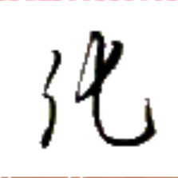
ホアイ⤴
【普】
[状態動詞]
普通だ、一般的だ、通常のとおりだ
普使
ホアイ⤴ズイ→
【普使】
[動詞]
常用する、よく使う
別普
パウ→ホアイ⤴
【別普】
[副詞]
特に
於此日労別普心闇
イェ·カー→キアー→ナイㇷ゚⤴パウ→ホアイ⤴ヒアー→ホエゥㇳ·
【於此日労別普心闇】
今日は仕事が特に疲れた。
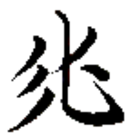
ムン→ホアイ⤴ (俗に) ション→
【妙】
[状態動詞]
奇妙である、特殊である、変わっている、例外的である
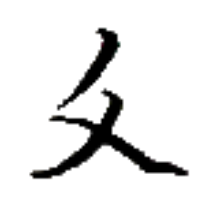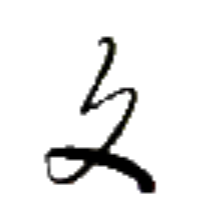
グイ⤴
【傷】
[名詞]
傷、けが
受傷
グㇰ⤴グイ⤴
【受傷】
[動詞＋目的語]
怪我をする、(比喩的に)痛い目に合う
彼使刀受終左手之傷
チャㇷ゚⤴ズイ→ガウ⤴グㇰ⤴タ·ティュン→ホㇷ゚→ア·グイ⤴
【彼使刀受終左手之傷】
彼は刃物で左手に傷を負った。
此時汝行而汝受無傷
カー→カㇰ·ムアー⤴モㇰ→ワ·ムアー⤴グㇰ⤴ムン→グイ⤴
【此時汝行而汝受無傷】
いま立ち去るのなら見逃してやろう。
いま立ち去らないとタダではおかないぞ。
ゼゥㇷ゚⤴
【癒】
[動詞]
治療する
癒人
ゼゥㇷ゚⤴スㇰ⤴
【癒人】
[名詞]
医者、医師
心与下癒人来之労
ヒアー→トゥイ⤴ウㇳ⤴ゼゥㇷ゚⤴スㇰ⤴ザㇰ⤴ア·ナイㇷ゚⤴
【心与下癒人来之労】
医者を呼んでください。
癒術人
ゼゥㇷ゚⤴ズィㇳ→スㇰ⤴
【癒術人】
[名詞]
医者、医師
癒草
ゼゥㇷ゚⤴コㇳ·
【癒草】
[名詞]
薬草
癒種
ゼゥㇷ゚⤴デゥㇳ·
【癒種】
[名詞]
丸薬
 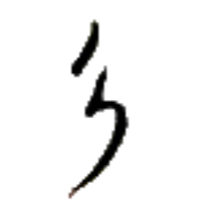
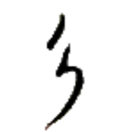
 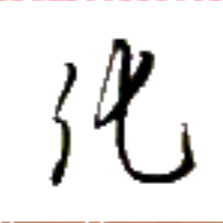
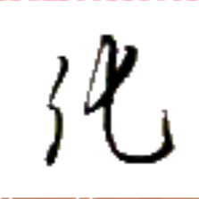